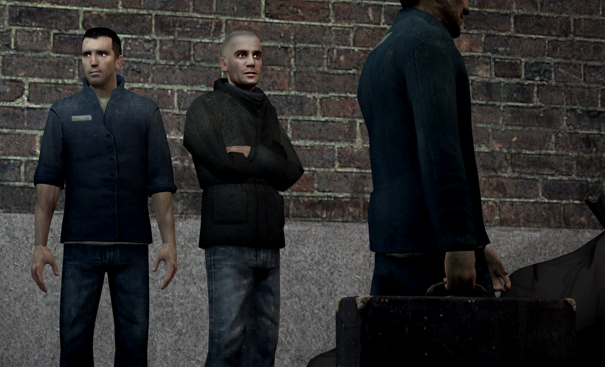

Cidadãos
Os cidadãos são os residentes humanos oprimidos dos restantes centros urbanos dos Combine.
Sem quase nenhum direito concedido a eles, eles são frequentemente transferidos sem aviso prévio entre cidades, seja para atrapalhar a formação de grupos de resistência organizados ou para impedir que os cidadãos se sintam confortáveis com o ambiente.
O serviço público periódicamente coloca os cidadãos para trabalhar pela produção, reparo e melhoria da cidade. Todos os cidadãos devem comparecer a esses turnos para manter seu valor social, contabilizado por Atos Civícos Documentados. Eles são conquistados por meio de ações que contribuem para a estabilidade contínua da cidade, como relatar ameaças à Proteção Civil e comparecer aos ciclos de trabalho mencionados anteriormente.
Empregos
Cidadãos selecionados podem ser considerados elegíveis para trabalhos avançados de serviço público e contratados pelo Ministério da Energia para manter as comodidades básicas que os Combine fornece: abastecimento de gás, máquinas de venda automática e equipamento de iluminação.
Estes cidadãos são entrevistados a partir de um conjunto de candidatos, com base nos seus Atos Civícos Documentados, por membros da Gestão Pública do Distrito 4, outro empreendimento para colaboradores dentro da cidade para realizar trabalho administrativo de baixo nível em nome do Ministério.
| FORÇA DE TRABALHO |
| Cidadãos |
|  |
| Os restantes habitantes do regime interino dos Combine, a maioria apenas desesperada por se manter viva e alimentada. |